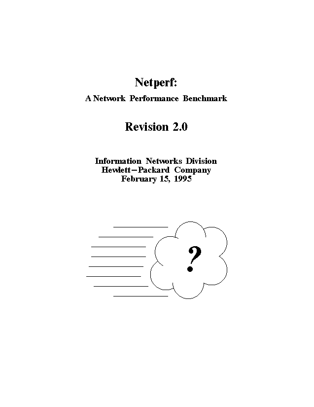
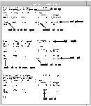
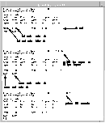

Section 0. The Legal Stuff
Copyright (C) 1993,1994,1995 Hewlett-Packard Company
ALL RIGHTS RESERVED.
The enclosed software and documention includes copyrighted works of
Hewlett-Packard Co. For as long as you comply with the following
limitations, you are hereby authorized to (i) use, reproduce, and
modify the software and documentation, and to (ii) distribute the
software and documentation, including modifications, for
non-commercial purposes only.
1. The enclosed software and documentation is made available at no
charge in order to advance the general development of
high-performance networking products.
2. You may not delete any copyright notices contained in the
software or documentation. All hard copies, and copies in
source code or object code form, of the software or
documentation (including modifications) must contain at least
one of the copyright notices.
3. The enclosed software and documentation has not been subjected
to testing and quality control and is not a Hewlett-Packard Co.
product. At a future time, Hewlett-Packard Co. may or may not
offer a version of the software and documentation as a product.
4. THE SOFTWARE AND DOCUMENTATION IS PROVIDED "AS IS".
HEWLETT-PACKARD COMPANY DOES NOT WARRANT THAT THE USE,
REPRODUCTION, MODIFICATION OR DISTRIBUTION OF THE SOFTWARE OR
DOCUMENTATION WILL NOT INFRINGE A THIRD PARTY'S INTELLECTUAL
PROPERTY RIGHTS. HP DOES NOT WARRANT THAT THE SOFTWARE OR
DOCUMENTATION IS ERROR FREE. HP DISCLAIMS ALL WARRANTIES,
EXPRESS AND IMPLIED, WITH REGARD TO THE SOFTWARE AND THE
DOCUMENTATION. HP SPECIFICALLY DISCLAIMS ALL WARRANTIES OF
MERCHANTABILITY AND FITNESS FOR A PARTICULAR PURPOSE.
5. HEWLETT-PACKARD COMPANY WILL NOT IN ANY EVENT BE LIABLE FOR ANY
DIRECT, INDIRECT, SPECIAL, INCIDENTAL OR CONSEQUENTIAL DAMAGES
(INCLUDING LOST PROFITS) RELATED TO ANY USE, REPRODUCTION,
MODIFICATION, OR DISTRIBUTION OF THE SOFTWARE OR DOCUMENTATION.
Section 1. Introduction
Netperf is a benchmark that can be used to measure various aspects of networking
performance. Its primary focus is on bulk data transfer and request/response performance
using either TCP or UDP and the Berkeley Sockets interface. There are optional tests
available to measure the performance of DLPI, Unix Domain Sockets, the Fore ATM API and
the HP HiPPI LLA interface.
This tool is maintained and informally supported by the IND Networking Performance Team.
It is NOT supported via any of the normal Hewlett-Packard support channels. You are free
to make enhancements and modifications to this tool.
This document is organized (loosely) into several sections as follows:
- Section 1. is what you are reading right now.
- Section 2. describes how to get the netperf bits and how to set-up your system to run
netperf. It also describes a simple way to verify that the installation has been successful.
- Section 3. describes the design of netperf.
- Section 4. describes netperf's bulk data transfer tests and their command line options.
- Section 5. describes netperf's request-response tests and their command options.
- Section 6. describes some of the supporting test types of netperf and their command line
options.
- Section 7. provides a description of the global command-line options for netperf.
- Section 8. provides some examples of netperf usage.
- Section 9. lists the changes and fixes in this revision of netperf.
- Section 10. lists several known problems with this revision of netperf.
- Section 11. provides some troubleshooting assistance.
We thank you in advance for your comments, and hope that you find this tool useful.
HP-IND Networking Performance Team
``How fast is it? It's so fast, that ..." ;-)
Conventions and Definitions
You may not be familiar with some of the conventions and definitions used by this document.
Generally, items of particular importance, command line options, and commands will be in
boldface type. Filenames and command line items requiring user substitution will appear in
italicized type.
A sizespec is a one or two item list passed with a command line option that can set the value
of one or two netperf parameters. If you wish to set both parameters to separate values, items
should be separated by a comma - Eg ``parm1,parm2". If you wish to set the first parameter
without altering the value of the second, you should follow the first item with a comma - Eg
``parm1,". Likewise, precede the item with a comma if you wish to set only the second
parameter - Eg ",parm2". An item without a comma will set both parameters. This last mode
is the one most frequently used.
Netperf has two types of command line options. The first are global command line options.
They are essentially any option that is not tied to a particular test, or group of tests. An example
of a global command line option is the test type. The second options are test specific options.
These are options which are only applicable to a particular test. An example of a test specific
option would be the send socket buffer size for a TCP_STREAM test. Global command line
options are specified first, test specific second. They must be separated from each other by a
``--" (two dashes). If you wish to give test specific options only, they must be preceded by
``--". (EG ./netperf -- -m 1024)
Section 2. Installing Netperf
Netperf is distributed in source form. This is to allow installation on systems other than those
to which the authors have access. There are two ways to install netperf. The first runs the
netperf server program, netserver, as a child of inetd, which requires that the installer of
netperf be able to edit the files /etc/services and /etc/inetd.conf (or their equivalent). The second
is to run netserver as a standalone daemon. This second method does not require edit
capabilities on /etc/services and /etc/inetd.conf. but does mean that you must remember to run
the netserver program explicitly.
This manual assumes that those wishing to measure networking performance already know
how to use anonymous FTP.
Getting the netperf bits from the Internet
For those people connected to the Internet, netperf is available via WWW. If you are not
connected to the Internet such that you can use WWW, then you may be able to retrieve netperf
via FTP or an FTP mail server. If all else fails, you can send email to Netperf Request
<netperf-request@hpisrdq.cup.hp.com>.
If you have a WWW browser, you can retrieve netperf from the Netperf Page. It is located at
the URL http://www.cup.hp.com/netperf/NetperfPage.html. Follow the links from that page.
Netperf source bits are also available via anonymous FTP from ftp.cup.hp.com in the directory
dist/networking/benchmarks. You should use binary mode transfers when bringing over the bits
as you will be grabbing the latest copy of this document along with the netperf C source files.
NOTE: Older versions of netperf are available via anonymous FTP from col.hp.com under
the directory dist/networking/benchmarks/. It can also be found on other FTP servers on the
Internet.
While the netperf source bits can be placed anywhere on the system, this manual will assume
that the source bits are placed in the directory /opt/netperf/src. Previous revisions of netperf
were assumed to be placed in /usr/etc/net_perf/src, but this has been changed to better
emphasize that netperf is not an official Hewlett-Packard product. You are free to place
netperf wherever you like, provided that you make the necessary modifications to the scripts.
Installing the bits
Once you have placed the netperf source bits onto the system, it is necessary to compile them
and perform some editing tasks. This section assumes that you have elected to install the
benchmark server, netserver, as a child of inetd.
The netperf distribution includes a makefile which assumes the existence of the directory
/opt/netperf. If you do not wish to have netperf installed there, it will be necessary for you to
edit the makefile. To assist in this process, obvious markers have been placed in the makefile
to indicate what must be changed. Also, some systems require different compile switches and
libraries. For those systems where the requirements were known to the author, comments have
been added to the makefile.
Once the makefile is customized as needed, simply enter the command:
$ make install
from within the netperf source directory. The netperf executables will be compiled and copied
into /opt/netperf or the place you specified in the makefile. Make will also copy the sample
script files into the same place and verify that they are set to be executable.
Now that the executables have been created, it is necessary to edit the /etc/services and
/etc/inetd.conf files. If you have decided to keep the netperf executables someplace other than
/opt/netperf, alter these lines accordingly. This editing step generally requires root access. If you
do not have root access, or do not wish to install netperf as a child of inetd, skip to the
subsection titled "Running netserver as a standalone Daemon."
Add this line to the /etc/services file:
netperf 12865/tcp
Then add this line to the /etc/inetd.conf file:
netperf stream tcp nowait root /opt/netperf/netserver netserver
Once the files have been edited, it is necessary to have inetd re-configure itself. On an
HP-UX system, this is accomplished with the command:
$ /etc/inetd -c
On some systems it is possible to get inetd to re-configure itself by sending it a SIGHUP with
the kill(2) command:
$ kill -HUP <pid of inetd>
On other systems it might be necessary to kill and re-start the inet daemon. At this point, root
access is no longer needed and you can proceed to the verification step.
Verifying the bits
To verify the installation of netperf, simply execute the command
/opt/netperf/netperf
A TCP_STREAM test of 10 seconds duration should be performed over the loopback
interface.
Running netserver as a standalone Daemon
If you cannot install netperf as a child of inetd, you can run the netserver as a standalone
daemon. Simply execute netserver with the "-p <port number>" option and it will happily
start accepting requests on the port number you specify. If you specify a port number other than
the normal netperf port number, you should remember to also specify "-p <portnum>" as
a global command line option of netperf.
Final Customization
The scripts provided with the netperf distribution are written with the assumption that netperf
is installed in /opt/netperf. If you have decided to install netperf in a different location, you will
need to edit each of the script files and alter this line:
NETHOME=/opt/netperf
or one like it, to be something like:
NETHOME=/my/netperf/location
Section 3. The Design of Netperf
Design Basics
Netperf is designed around the basic client-server model. There are two executables -
netperf and netserver. Generally you will only execute the netperf program - the netserver
program will be invoked by the other system's inetd.
When you execute netperf, the first thing that will happen is the establishment of a control
connection to the remote system. This connection will be used to pass test configuration
information and results to and from the remote system. Regardless of the type of test being run,
the control connection will be a TCP connection using BSD sockets.
Once the control connection is up and the configuration information has been passed, a
separate connection will be opened for the measurement itself using the APIs and protocols
appropriate for the test. The test will be performed, and the results will be displayed.
Netperf places no traffic on the control connection while a test is in progress. Certain TCP
options, such as SO_KEEPALIVE, if set as your system's default, may put packets out on the
control connection.
CPU Utilization
CPU utilization is a frequently requested metric of networking performance. Unfortunately,
it can also be one of the most difficult metrics to measure accurately. Netperf is designed to
use one of several (perhaps platform dependent) CPU utilization measurement schemes.
Depending on the CPU utilization measurement technique used, a unique single-letter code
will be included in the CPU portion of the test banner for both the local and remote systems.
The default CPU measurement technique is based on pstat (-DPSTAT compilation only).
This technique should work on most HP-UX systems, but it may under-report the CPU
usage. The extent of this underreporting is not currently known. When pstat() is used to gather
CPU utilization information, a "P" will be displayed in the test banner in the CPU column.
A second measurement technique is based on a counter inserted into the HP-UX kernel's idle
loop. Whenever the system goes completely idle (from the kernel's perspective), this counter
starts to increment. When the system is not idle, the counter stops incrementing. This counter's
value is retrieved by reading from /dev/kmem - a process which generally requires superuser
privileges. CPU utilization is determined by comparing the rate at which the counter
increments when the system is idle to the rate when a test is running. The idle rate is
re-computed for each test unless provided by the user (more information on CPU rates can
be found in Section 6.)
This counter is not present in a production HP-UX kernel and must be compiled-in. Briefly,
this entails adding a flag (-DIDLE_CNT) to the kernel makefile, removing a .o file, and
recompiling the kernel. This cannot be done on a system lacking kernel sources. Furthermore,
this technique cannot be used at all on non-HP systems unless the vendors in question
implement a similar technique. The kernel idle counter is considered highly accurate. When
it is used, a "I" will be displayed in the test banner in the CPU column.
One technique that could have been used was to fork a ``looperprocess" which would run at
a low priority and count much like the kernel idle counter mechanism. Presumably, this
process would run only when there was nothing else for the system to do. Unfortunately, while
this mechanism is likely more accurate than using pstat, it may have an impact on the
measurement. This mechanism is not currently available in netperf. When it is implemented,
the letter "L" will be the appropriate single-letter code.
Other codes may be included in later versions of netperf. When the CPU utilization
mechanism is unknown, either a "U" or a "?" will be displayed.
Great care should be exercised when looking at CPU utilization. Be certain you are familiar
with the technique being used, and its implications. For example, a mechanism that is based
solely on CPU charged to the netperf (netserver) process alone will likely under-report the
real CPU utilization SIGNIFICANTLY. Much network processing takes place away from the
user process context. Caveat Benchmarker!
Section 4. Using Netperf to measure bulk data transfer performance
The most common use of netperf is measuring bulk data transfer performance. This is also
referred to as "stream" or "unidirectional stream" performance. Essentially, these tests will
measure how fast one system can send data to another and/or how fast that other system can
receive it.
TCP Stream Performance
The TCP stream performance test is the default test type for the netperf program. The simplest
test is performed by entering the command:
/opt/netperf/netperf -H remotehost
which will perform a 10 second test between the local system and the system identified by
remotehost. The socket buffers on either end will be sized according to the systems' default and
all TCP options (e.g. TCP_NODELAY) will be at their default settings.
To assist in measuring TCP stream performance, two script files are provided with the netperf
distribution. They are tcp_stream_script and tcp_range_script. Tcp_stream_script will invoke
netperf based on the setting of script variables controlling socket and send sizes.
Tcp_range_script will perform a similar set of tests, with the difference being that where
tcp_stream_script tests specific datapoints, tcp_range_script will perform tests at points within
a specified range.
If you would like to perform tests other than those done by the scripts, you can invoke netperf
manually. Some of the options you will likely want to experiment with are:
-s sizespec which will set the local send and receive socket buffer sizes to the
value(s) specified. [Default: system default socket buffer sizes]
-S sizespec which behaves just like -s but for the remote system
-m value set the local send size to value bytes. [Default: local socket buffer
size]
-M value which behaves like -m, setting the receive size for the remote
system. [Default: remote receive socket buffer size]
-l value set the test length to value seconds when value is > 0 and to
|value| bytes when value is < 0
-D set the TCP_NODELAY option to true on both systems
This is not a complete list of options that can affect TCP stream performance, but it does cover
those options that are used most often. A complete list of netperf options can be found in
Section 7.
UDP Stream Performance
A UDP stream performance test is very similar to a TCP stream test. One difference is that
the send size cannot be larger than the smaller of the local and remote socket buffer sizes.
What this means is that you must make certain that when you specify the -m option, you use
a value that is less than or equal to the socket buffer sizes (-s and -S). Also, since the UDP
Stream test is not the default test, the -t testname option must be specified, with the testname
set to UDP_STREAM. So, a simple UDP stream test command might look something like
this:
$ /opt/netperf/netperf -H remotehost -t UDP_STREAM -- -m 1024
There is a script provided that performs various UDP stream performance tests. It is called
udp_stream_script. As with TCP stream performance, you can use the script provided, or
perform tests yourself to get datapoints not covered by the script.
NOTE: UDP is an unreliable protocol. It is important that you examine the results carefully
as the reported send rate can be much higher than the actual receive rate. Great care should
be taken when reporting UDP_STREAM test results to make sure they are not misleading.
For example, one should always report both send and receive rates together for a
UDP_STREAM test. If you are going to report a single number, you should report the receive
rate.
NOTE: If you would like to "pace" the send rate of the UDP_STREAM test, add a
-DINTERVALS to the makefile, do a "make clean" and re-compile. You can then use the
-b and -w global options to set the burst size (sends) and wait time (milliseconds)
respectively.
DLPI Connection Oriented Stream Performance
NOTE: DLPI tests are not compiled-in by default with netperf. If you wish to measure
performance over DLPI, you will need to add a -DDO_DLPI to the makefile and perhaps
add to the ``LIBS=" and re-compile netperf and netserver.
A DLPI Connection Oriented Stream test (DLCO_STREAM) looks very similar to a TCP
Stream test - they both use reliable, connection oriented protocols. The DLPI test differs
from the TCP test in that the message size must always be less than or equal to the local
interface's MTU - DLPI does not provide TCP-style segmentation and reassembly.
The simplest DLPI Connection Oriented Stream test would look something like this:
$ /opt/netperf/netperf -H remotehost -t DLCO_STREAM -- -m 1024
Here are some of the DLPI-specific command line options:
-D devspec specify the local and/or remote DLPI device file name(s)
(fully-qualified). Syntax is the same as that of a sizespec.
-m value specify the send size, in bytes, for the local system. This must be
less than or equal to the link MTU.
-M value which behaves like -m, setting the receive size for the remote
system.
-p ppaspec set the local and/or remote DLPI PPA(s). Syntax is the same as
that of a sizespec.
-r value specify the request size, in bytes, for the test.
-R value specify the response size, in bytes, for the test.
-s value specify the 802.2 SAP for the test. This should not conflict with
any assigned SAP's.
-w sizespec specify the local send/recv window sizes in frames (where
available).
-W sizespec specify the remote send/recv window sizes in frames (where
available).
DLPI Connectionless Stream
NOTE: DLPI tests are not compiled-in by default with netperf. If you wish to measure
performance over DLPI, you will need to add a -DDO_DLPI to the makefile and perhaps
add to the ``LIBS=" and re-compile netperf and netserver.
A DLPI Connectionless Stream test (DLCL_STREAM) is analogous to a UDP_STREAM
test. They both make use of unreliable, connectionless transports. The DLPI test differs from
the UDP test in that the message size must always be less than or equal to the link MTU -
DLPI does not provide IP-like segmentation and reassembly functionality, and the netperf
benchmark does not presume to provide one.
The simplest DLPI Connectionless Stream test command line would look something like this:
$ /opt/netperf/netperf -H remotehost -t DLCL_STREAM -- -m 1024
Here are some of the DLPI-specific command line options for the DLCL_STREAM test:
-D devspec specify the local and/or remote DLPI device file name(s)
(fully-qualified). Syntax is the same as that of a sizespec.
-m value specify the send size, in bytes, for the local system. This must be
less than or equal to the link MTU.
-M value which behaves like -m, setting the receive size for the remote
system.
-p ppaspec set the local and/or remote DLPI PPA(s). Syntax is the same as
that of a sizespec.
-s value specify the 802.2 SAP for the test. This should not conflict with
any assigned SAP's.
-w sizespec specify the local send/recv window sizes in frames (where
available).
-W sizespec specify the remote send/recv window sizes in frames (where
available).
Unix Domain Stream Sockets
NOTE: Unix Domain Socket tests are not compiled into netperf by default. If you wish to
measure the performance of Unix Domain Sockets, you must recompile netperf and netserver
with -DDO_UNIX added to the makefile.
A Unix Domain Stream Socket Stream test (STREAM_STREAM) is very much like a
TCP_STREAM test.
The Simplest Unix Domain Stream Socket Stream test command line would look something
like this:
$ /opt/netperf/netperf -t STREAM_STREAM
The -H global command line Option is not valid for a Unix Domain Socket test and should
not be specified.
Here are some of the Unix Domain-specific command line options for the
STREAM_STREAM test:
-m value set the local send size to value bytes. [Default: local socket buffer
size]
-M value which behaves like -m, setting the receive size for the remote
system. [Default: remote receive socket buffer size]
-p dirspec set the directory where pipes will be created. [Default: system
default for the tempnam() call]
-s sizespec which will set the local send and receive socket buffer sizes to the
value(s) specified. [Default: system default socket buffer sizes]
-S sizespec which behaves just like -s but for the remote system
Unix Domain Datagram Sockets
NOTE: Unix Domain Socket tests are not compiled into netperf by default. If you wish to
measure the performance of Unix Domain Sockets, you must recompile netperf and netserver
with -DDO_UNIX added to the makefile.
A Unix Domain Datagram Socket Stream test (DG_STREAM) is very much like a
TCP_STREAM test except that message boundaries are preserved.
The Simplest Unix Domain Datagram Socket Stream test command line would look
something like this:
$ /opt/netperf/netperf -t DG_STREAM
The -H global command line option is not valid for a Unix Domain Socket test and should
not be specified. Here are some of the test specific command line options available in a
DG_STREAM test.
-m value set the local send size to value bytes. [Default: local socket buffer
size]
-M value which behaves like -m, setting the receive size for the remote
system. [Default: remote receive socket buffer size]
-p dirspec set the directory where pipes will be created. [Default: system
default for the tempnam() call]
-s sizespec which will set the local send and receive socket buffer sizes to the
value(s) specified. [Default: system default socket buffer sizes]
-S sizespec which behaves just like -s but for the remote system
Fore ATM API Stream
NOTE: Fore ATM API tests are not compiled into netperf by default. If you wish to measure
the performance of connections over the Fore ATM API, you must recompile netperf and
netserver with -DDO_FORE added to the makefile.
A Fore ATM API Stream test (FORE_STREAM) is very much like a UDP_STREAM test.
NOTE: The Fore ATM API exports an unreliable protocol. It is important that you examine
the results carefully as the reported send rate can be much higher than the actual receive rate.
Great care should be taken when reporting FORE_STREAM test results to make sure they
are not misleading. For example, one should always report both send and receive rates
together for a FORE_STREAM test. If you are going to report a single number, you should
report the receive rate.
The simplest Fore ATM API Stream test command line would look something like this:
$ /opt/netperf/netperf -t FORE_STREAM -H remotehost
Here are some of the test specific command line options applicable to a FORE_STREAM
test.
-a aal use the ATM Adaptation Layer number aal to encapsulate
packets. Specifying 3 or 4 will yield AAL3/4, and 5 will yield
AAL5. [Default: 5 -> AAL5]
-b sizespec set the mean burst target and/or minimum in units of kilobit
packets. The first value is target and the second is minimum.
[Default: 0,0]
-d devspec set the name of the ATM device file to be opened. [Default:
/dev/atm]
-m value set the local send size to value bytes. This must not be larger than
the ATM MTU. [Default: ATM MTU]
-M value which behaves like -m, setting the receive size for the remote
system. [Default: ATM MTU]
-p sizespec set the peak bandwidth target and/or minimum in units of
kilobits/s. The first value is target and the second it minimum.
[Default: 0,0 -> network assigned]
-P sizespec set the mean bandwidth target and/or minimum in units of
kilobits/s. The first value is target and the second is minimum.
[Default: 0,0 -> network assigned]
Section 5. Using Netperf to measure request/response performance
Request/response performance is the second area that can be investigated with netperf.
Generally speaking, netperf request/response performance is quoted as "transactions/s" for
a given request and response size. A transaction is defined as the exchange of a single request
and a single response. From a transaction rate, one can infer one way and round-trip average
latency.
TCP Request/Response Performance
The TCP request/response test can be invoked with netperf though the use of the -t option
with an argument of TCP_RR. So, a ``default" request/response command would look
something like this:
$ /opt/netperf/netperf -H remotehost -t TCP_RR
and will use the system default socket buffer sizes, a default request size of 1 byte, and a default
response size of 1 byte.
As with the stream performance tests, a script is available to assist you in generating TCP
request/response performance numbers. It is called tcp_rr_script. However, if you should need
to generate numbers at points of you own choosing, these command line options will be of use:
-r sizespec set the request and/or response sizes based on sizespec.
-l value set the test duration based on value. For value > 0, test duration
will be value seconds. Otherwise, test duration will be |value|
transactions.
-s sizespec which will set the local send and receive socket buffer sizes to the
value(s) specified. [Default: system default socket buffer sizes]
-S sizespec which behaves just like -s but for the remote system
-D set the TCP_NODELAY option to true on both systems
The request and response sizes will be the buffer sizes posted to send and receive. The -m and
-M options are not meaningful for a TCP_RR test.. As TCP is a stream protocol and not a
message protocol, it is necessary to loop on receives until the entire message is delivered. The
buffer pointer passed to the first receive for an individual transaction will be aligned and offset
as requested by the user. It will be incremented by the number of bytes received each time until
the entire request/response is received. The buffer pointer will be re-aligned and offset for
the next transaction.
UDP Request/Response Performance
UDP request/response performance works just like TCP request/response performance. All
the options available there are present here with the exception of the -D option;
TCP_NODELAY has no meaning for a UDP test. To invoke a UDP request/response test, use
an argument of UDP_RR with the -t option to produce a command like something like this:
$ /opt/netperf/netperf -H remotehost -t UDP_RR
Again, a script is provided which will generate results for some of the more common
datapoints. It is named udp_rr_script.
DLPI Connection Oriented Request/Response Performance
NOTE: DLPI tests are not compiled into netperf by default. If you wish to measure the
performance of DLPI, you must recompile netperf and netserver with -DDO_DLPI added
to the makefile.
A DLPI Connection Oriented Request/Response test (DLCO_RR) looks much the same as
any other request/response test. It performs a request/response test over a reliable connection.
As with the other DLPI tests, there is no segmentation and reassembly, so all request and/or
response sizes must be less than or equal to the link MTU.
A simple DLCO_RR test invocation would look something like this:
$ /opt/netperf/netperf -H remotehost -t DLCO_RR
Here are some of the DLPI-specific command line options:
-D devspec specify the local and/or remote DLPI device file name(s)
(fully-qualified). Syntax is the same as that of a sizespec.
-p ppaspec set the local and/or remote DLPI PPA(s). Syntax is the same as
that of a sizespec.
-r sizespec specify the request and/or response sizes, in bytes, for the test.
-s value specify the 802.2 SAP for the test. This should not conflict with
any assigned SAP's.
-w sizespec specify the local send/recv window sizes in frames (where
available).
-W sizespec specify the remote send/recv window sizes in frames (where
available).
DLPI Connectionless Request/Response Performance
NOTE: DLPI tests are not compiled into netperf by default. If you wish to measure the
performance of DLPI, you must recompile netperf and netserver with -DDO_DLPI added
to the makefile.
A DLPI Connectionless Request/Response test (DLCL_RR) looks much the same as any
other request/response test. It performs a request/response test over an unreliable connection.
However, netperf does not have any sort of retransmission mechanism, so packet loss with this
test will result in dramatically lowered performance results. As with the other DLPI tests, there
is no segmentation and reassembly, so all request and/or response sizes must be less than or
equal to the link MTU.
A simple DLCL_RR test invocation would look something like this:
$ /opt/netperf/netperf -H remotehost -t DLCL_RR
Here are some of the DLPI-specific command line options:
-D devspec specify the local and/or remote DLPI device file name(s)
(fully-qualified). Syntax is the same as that of a sizespec.
-p ppaspec set the local and/or remote DLPI PPA(s). Syntax is the same as
that of a sizespec.
-r sizespec specify the request and/or response sizes, in bytes, for the test.
-s value specify the 802.2 SAP for the test. This should not conflict with
any assigned SAP's.
-w sizespec specify the local send/recv window sizes in frames (where
available).
-W sizespec specify the remote send/recv window sizes in frames (where
available).
Unix Domain Stream Socket Request/Response Performance
NOTE: Unix Domain Socket tests are not compiled into netperf by default. If you wish to
measure the performance of Unix Domain Sockets, you must recompile netperf and netserver
with -DDO_UNIX added to the makefile.
A Unix Domain Stream Socket Request/Response test (STREAM_RR) is very much like a
TCP_RR test.
The STREAM_RR test command line would look something like this:
$ /opt/netperf/netperf -t STREAM_RR
The -H global command line option is not valid for a Unix Domain Socket test and should
not be specified.
Here are some of the Unix Domain-specific command line options for the
STREAM_STREAM test:
-p dirspec set the directory where pipes will be created. [Default: system
default for the tempnam() call]
-r sizespec which will set the request and response sizes to the value(s)
specified. [Default: 1 byte]
Unix Domain Datagram Socket Request/Response Performance
NOTE: Unix Domain Socket tests are not compiled into netperf by default. If you wish to
measure the performance of Unix Domain Sockets, you must recompile netperf and netserver
with -DDO_UNIX added to the makefile.
The Simplest Unix Domain Datagram Socket Request/Response (DG_RR) test command
line would look something like this:
$ /opt/netperf/netperf -t DG_STREAM
The -H global command line option is not valid for a Unix Domain Socket test and should
not be specified. Here are some of the test specific command line options available in a
DG_STREAM test.
-p dirspec set the directory where pipes will be created. [Default: system
default for the tempnam() call]
-r sizespec set the request and/or response sizes to the value(s) specified.
[Default: 1 byte]
Fore ATM API Request/Response Performance
NOTE: Fore ATM API tests are not compiled into netperf by default. If you wish to measure
the performance of connections over the Fore ATM API, you must recompile netperf and
netserver with -DDO_FORE added to the makefile.
A Fore ATM API Request/Response test (FORE_RR) is very much like a UDP_RR test.
The simplest FORE_RR test command line would look something like this:
$ /opt/netperf/netperf -t FORE_RR -H remotehost
Here are some of the test specific command line options applicable to a FORE_STREAM
test.
-a aal use the ATM Adaptation Layer number aal to encapsulate
packets. Specifying 3 or 4 will yield AAL3/4, and 5 will yield
AAL5. [Default: 5 -> AAL5]
-b sizespec set the mean burst target and/or minimum in units of kilobit
packets. The first value is target and the second is minimum.
[Default: 0,0]
-d devspec set the name of the ATM device file to be opened. [Default:
/dev/atm]
-p sizespec set the peak bandwidth target and/or minimum in units of
kilobits/s. The first value is target and the second it minimum.
[Default: 0,0 -> network assigned]
-P sizespec set the mean bandwidth target and/or minimum in units of
kilobits/s. The first value is target and the second is minimum.
[Default: 0,0 -> network assigned]
-r sizespec set the request and/or response sizes to the values specified
[Default: 1 byte]
Section 6. Other Netperf tests
Apart from the usual performance tests, netperf contains some tests that can be used to
streamline measurements. These tests range from CPU rate calibration (present) to host
identification (future enhancement).
CPU rate calibration
NOTE: This discussion of calibration is germane only for those systems with the Kernel Idle
Counter in place. It is not germane for CPU utilization measured with pstat(). If in the future
a looper process is introduced, this discussion would be germane for it as well.
In this context, a CPU rate is expressed not in clock frequencies, MIPS or MFLOPS, but simply
how fast the system can count. There are two CPU rate calibrations tests. The first measures
and displays the CPU rate for the local system. It is called LOC_CPU. The second test,
REM_CPU, is exactly the same, except that it works on the system specified with the -H
command line option.
In and of themselves, these two tests are only arcanely interesting. However, they can be used
to greatly speed-up test scripts. Remember that for CPU measurements, it is necessary to
``calibrate" the CPU or determine how fast it can count. This process takes forty (40) seconds
for the local system and forty (40) seconds for the remote system. One can save the results of
the CPU tests in shell variables and then use them as arguments to the -c and -C command
line options. Passing-in a rate with the -c or -C option tells netperf that you already know
the CPU rate, so it can skip the calibration steps. For example, the following shell fragment
will determine the local CPU rate and use that for subsequent tests:
$ LOC_RATE=`/opt/netperf/netperf -t LOC_CPU`
$ /opt/netperf/netperf -H somehost -c $LOC_RATE
You should remember that CPU rates will vary from system to system. Generally, the best
trade-off between time and accuracy is to perform the calibrations once in each script or
session. The default scripts provided will use the LOC_CPU and REM_CPU tests to reduce
the time overhead of CPU calibration.
Section 7. Netperf Command-line Options Reference
This section describes each of the global command-line options available in the netperf
program. Essentially, it is an expanded version of the usage information displayed by netperf
when invoked with the -h option in global command line option area.
Command-line Options Syntax
Revision 1.8 of netperf introduced enough new functionality to overrun the English alphabet
for mnemonic command line option names. For this reason, command-line options were split
in Revision 1.8. This split remains in Revision 1.9alpha. There are two types of netperf
command-line options. They are ``global" and ``test-specific." Both types are entered on the
same command line, but they must be separated by a ``--" for correct parsing. Global
command line options come first, followed by test-specific. If only test-specific options are
to be specified, they must be preceded by ``--" or the results will be undefined.
Global Options
-a sizespec This option allows you to alter the send and receive buffer
alignments on the local system. Changing the alignment of the
buffers can force the system to use different copying schemes,
which can have a measurable impact on performance. If the page
size for the system was 4096 bytes, and you wanted to pass page
aligned buffers beginning on page boundaries, you could use ``-a
4096". The units for this option are whole bytes. [Default: 8 bytes]
-A sizespec This option is identical to the -a option with the exception that
the alignments are altered for the remote system.
-b size This option (-DINTERVALS compilation only) sets the size of
a burst of packets in a _STREAM test. This can be used to "pace"
the send rate when there is no flow-control provided by the
protocol being measured.
-c [rate] This option will request CPU utilization and service demand
calculations for the local system. If the optional rate parameter
is specified, netperf will use that instead of calculating the rate
itself. For more information on CPU utilization measurements
with netperf, please consult Section 3. [Default: no CPU
measurements]
-C [rate] This option is identical to the -c option with the exception that
it requests CPU utilization for the remote system.
-d This option will increase the quantity of debugging output
displayed during a test. If debugging is set high enough, it may
have a measurable impact on performance. Debugging
information for the local system (the one running netperf) is
printed to stdout. Debugging information for the remote system
(the one running netserver) is sent to the file /tmp/netperf.debug
[Default: no debugging]
-f GMKgmk This option can be used to change the units of measure for stream
tests. The ``G", ``M", and ``K" arguments will set the output units
to 230, 220, and 210 bytes/s respectively. The ``g", ``m", and ``k"
arguments will set the output units to 109, 106, and 103 bits/s
respectively. [Default: m - 106 bits/s)]
-h This option causes netperf to display its usage string and exit.
-H remotehost This option sets the name of the remote system. It can be
specified as either a hostname (e.g. foo.bar.baz) or an IP address
(e.g. 1.2.3.4). [Default: localhost]
-l testlen With this option you can control the length of the test. If you
specify a positive value for testlen, the test will run for that many
seconds. If you specify a negative value, the test will run for that
many transactions for a request/response test, or that many bytes
for a stream test. Some tests can only be timed. [Default: 10
seconds]
-o sizespec The value passed with this option will be used as an offset from
the alignment specified with the -a option. With this option you
could, for example, pass buffers to the system that began 3 bytes
after the beginning of a 4KB page (-a 4096 -o 3) [Default: 0
bytes]
-O sizespec This option behaves just like the -o option but on the remote
system. It works in conjunction with the -A option. [Default: 0
bytes]
-p portnum You should use this option when the netserver program will be
waiting at a port other than the default. This might be the case if
you run netserver as a standalone process rather than a child of
inetd.
-P 0|1 If you do not want the test banner to be displayed, then use this
option with an argument of 0. An situation where this might be
useful would be where you repeat the same test configuration
several times and do not want the banners cluttering things up.
[Default: 1 - display test banners]
-t testname You should use this option to specify the test you wish to perform.
As of this writing, the valid testnames are TCP_STREAM,
TCP_RR, UDP_STREAM, UDP_RR, DLCO_STREAM,
DLCO_RR, DLCL_STREAM, DLCL_RR,
STREAM_STREAM, STREAM_RR, DG_STREAM,
DG_RR, FORE_STREAM, FORE_RR, HIPPI_STREAM,
HIPPI_RR LOC_CPU, and REM_CPU. [Default:
TCP_STREAM]
-v verbosity This option can be used to set the verbosity level for the test. It
can be used in conjunction with the -P option. If the verbosity is
set to 0, then only the result of the test will be displayed. If CPU
utilization numbers are requested for the local system, the result
of the test will be local service demand. If remote CPU utilization
is requested, then the result will be remote service demand.
Otherwise, the result will be the measured thruput.
-V This option will attempt to enable the copy-avoidance features
of HP-UX 9.0 networking. [Default: no copy-avoidance
attempted]
-w time This option (-DINTERVALS compilation only) will set the
inter-burst time to time milliseconds. The actual wait time may
differ depending on the resolution of timers on the system being
measured.
Section 8. Netperf examples
NOTE: These examples are from an older version of netperf and do not represent the split
between global and test specific command line options.
 The next few pages contain annotated screen dumps of example netperf runs. After examining these examples, you should have a fairly good idea of how to interpret the output of netperf and what effect certain options have on that output. These examples are from a revision of netperf which used a different command line option syntax. First, TCP_STREAM tests.
The next few pages contain annotated screen dumps of example netperf runs. After examining these examples, you should have a fairly good idea of how to interpret the output of netperf and what effect certain options have on that output. These examples are from a revision of netperf which used a different command line option syntax. First, TCP_STREAM tests.
This next set of examples is taken from some UDP_STREAM tests. You should notice right away that the output format is slightly different as there can be UDP sends that ``fail" without there being a connection loss. Also, since every UDP datagram sent is not always ``sent" or received, there are more statistics displayed - one line for local statistics and a second line for remote statistics.
This third set of examples is taken from some *_RR tests. These tests use a two-line results format much like that of the UDP_STREAM tests. The only exception is that there are no provisions made for displaying lost packets, as there are not to be any.
Section 9. Changes and Fixes in this Release of Netperf
Revision 2.0 of netperf contains the following changes and fixes:
- On some systems, running netserver as a standalone daemon would result in the
accumulation of defunct or zombie processes. A call to waitpid has been added to
netserver so it can "reap" its child processes when they exit.
- The option of confidence intervals has been added to give more assurance that the
results displayed by netperf are accurate and repeatable. While this will help, it is by
no means an ironclad guarantee. This is an experiment. The feature has been added
to the BSD tests only. If they are popular enough, they will be added to the other test
suites as time permits.
- The test banner output has been modified to give a better indication of the command
line options used. Also, if CPU utilization measurements are requested, a special letter
code will be printed in the headers indicating the type of CPU measurement used. More
information on this feature can be found in Section 3.
- The scripts which ship with netperf have been modified to be more "netperf database
friendly." For each datapoint, the netperf command used is echoed to allow
cut-and-paste into the netperf data submittal form. Also, each datapoint is displayed
with a full set of test banners - again to facilitate results submission to the database.
The netperf results database can be accessed with a forms-capable WWW browser at
the URL http://www.cup.hp.com/netperf/NetperfPage.html.
- The control connection is closed gracefully in a manner similar to that used in the
TCP_STREAM test. This is intended to fix the problems some users had with the
UDP_STREAM test which could so swamp the systems involved that the control
connection could be brought down before the results were successfully transmitted.
- A problem with timeouts in the TCP_RR and UDP_RR test with requests or responses
much greater than the socket buffer size was fixed.
- A problem with netserver going into an infinite loop when netperf is terminated with
Ctrl-C should be fixed in this release.
- On those systems supporting the TCP_MAXSEG option, the TCP MSS used for the
data connection of a TCP_STREAM, TCP_RR or TCP_CRR test will be displayed
when the verbosity (-v) is greater than one (1).
- Optional tests for the HP HiPPI interface using LLA have been added. To include these
in netperf, add a -DDO_HIPPI and recompile. If you would like to use these tests for
generic LLA performance testing, add an additional -DBUTNOTHIPPI to the
makefile. WARNING: LLA is an API which will not be supported sometime after
HP-UX 10.0. The preferred link-level access mechanism is DLPI. Future versions
of netperf may remove this functionality without warning.
- Optional code to allow pacing of sends has been added/refined. This can be used to
match the send rate of a sending system in an unreliable _STREAM test (UDP, DLCL,
Fore, HIPPI) to the rate of the receiver. This feature is enabled by adding a
-DINTERVALS to the makefile and re-compiling.
- Optional code to keep a histogram of response times for the _RR tests or time spent
in the send(2) call of a _STREAM test has been added. This feature is enabled by
adding a -DHISTOGRAM to the makefile and re-compiling. The histogram will be
displayed when the requested verbosity (global command line option -v) is set to two
(2) or more. It is known that the extra calls to gettimeofday() affect the measured
performance.
- Those global and BSD test-specific command line options taking integer values can
now be specified in "shorthand." If the number is followed by "K," "M," or "G" the
number will be considered a base and multiplied by 1024, 1024 * 1024, and 1024 * 1024
* 1024 respectively. If the number is followed by "k," "m," or "g" it will be multiplied
by 1000, 1000 * 1000 or 1000 * 1000 * 1000 respectively. For example, 32K expands to
32768 and 32k expands to 32000. If this proves useful, it will be migrated to the other
test suites as well. NOTE the base number must be an integer. Anything after a decimal
point will be ignored - so 3.2k becomes 3000 and .5m becomes 0.
Section 10. Known Bugs and Misfeatures
Revision 2.0 of netperf contains the following known bugs and misfeatures:
- Verbose Output - the logic for greater than standard verbosity is flawed in all tests
except the TCP_STREAM test. The verbose output for the TCP_STREAM test could
use some formatting help. When confidence intervals are requested, the verbose
output will likely be flawed.
- On some systems, the UDP_RR test will fail with with the message ``send_udp_rr: data
recv error: Connection Refused." It is unknown if this is a bug in those systems for
connected UDP sockets, or a bug in netperf.
- Histogram and confidence interval support has been added to the BSD tests only. If
enough people find them useful, those features could be added to the other test suites.
- The error and warning messages are not localized.
- The supporting documentation is not localized.
- The benchmark is not written to ANSI C. However, an ANSI C compiler is required
for -DHISTOGRAM compilation. Future versions of the benchmark may require
ANSI C for all modes of compilation.
- Other API's. Netperf still does not support XTI/TLI, nor does it support WINSOCK.
- The manual shows examples from revisions of netperf using different command line
syntax. It does not show any DLPI, Unix Domain, or Fore API examples. It does not
show the enhanced output of Revision 2.0.
- The DLPI Tests are not fully debugged for multivendor or non-Ethernet
environments.
- The Fore API Tests need better headers.
- The errors reported for remote netperf errors in a Fore API test will almost certainly
be wrong as netperf does not distinguish between an atm_errno and a standard errno.
- The manual needs troubleshooting information for Unix Domain and Fore tests.
- CPU Utilization measurement is not portable across platforms.
If you are feeling adventurous, fixes for these problems would be greatly appreciated ;-)
Section 11. Troubleshooting
Netperf is a rather simple tool, so its error conditions will be relatively simple and few in
number. This section will cover some of the more common error messages and situations you
might see and offers advice as to what might be wrong and how to correct it. The error
messages displayed on non-HP-UX systems might not be the same.
establish_control: control socket connect failed: Connection refused
When this message is displayed, it can mean one of the following:
- Netperf has not been installed on the remote system, or you forgot to run the netserver
program explicitly. Either install netperf following the instructions at the beginning of
this document, or run netserver explicitly on the remote system.
- You made a typo in the files /etc/services, or /etc/inetd.conf. Check your entries against
those in the installation section. If changes are needed, make them and then
reconfigure inetd as described in the installation section.
- You forgot to reconfigure inetd. Reconfigure inetd following the instructions in the
installation section.
- You specified a port number with the -p option to netperf that is not the same as the
port number being used by the netserver program on the remote system.
- Inetd security on the remote system is not configured to allow connections from the
local system. Follow the instructions in the manpage for inetd.sec.
- Netperf hates you. It has always hated you. Consult the job listings in misc.jobs.offered
and start your life over :)
udp_send: data send error: Message too long
-or-
send_udp_rr: data send error: Message too long
These messages indicate the following:
- You have requested a send size (-m option) or request size (-r option) that is larger
than the local socket send buffer size (-s option) with a UDP_STREAM or UDP_RR
test (-t option). You should either increase the size of the socket buffer, or decrease
the size of the send/request.
put_control: acknowledgement error wanted 6 got 5
netperf: dl_open: could not sent control message, errno = 0
netperf: send_dlpi_co_stream: dlpi_stream data descriptor: Error 0
This stream of messages indicates the following:
- You have specified a DLPI PPA that is not valid. Verify the correct PPA and try again.
Variations on this stream of messages can be seen for each of the DLPI tests.
netperf: dl_open: open of /dev/foo failed, errno = 2
netperf: send_dlpi_co_stream: dlpi stream data descriptor: No such file or directory
This stream of messages indicates the following:
- You have specified a DLPI device file that is not valid. Verify the device file name and
try again. Defaults for DLPI device files will vary from OS to OS. Variations on this
stream of messages can be seen for each of the DLPI tests.
netperf: receive_response: no response received
This message indicates that netperf was expecting to receive a response on its control
connection, but none was received within the timeout period. In some cases, this could be the
result of the operating system restarting system calls that netperf/netserver expects to exit with
an errno of EINTR.
Of course, there may be other problems that are not covered by this section. Comments and
questions pertaining to both this document and netperf are encouraged. Please feel free to
send them to:
raj@cup.hp.com
Alternatively, the IND Networking Performance Team does try to read the Internet
newsgroups comp.sys.hp.*, comp.protocols.tcp-ip, comp.benchmarks and the HP internal
newsgroups pertaining to networking and performance.
DLPI Data Link Provider Interface. This is a standardized Link-Level
Access (Level 2 of the OSI Reference Model) API. This interface
is discussed in many books on Streams programming. The DLPI
Version 2 Reference can be retrieved via anonymous FTP from
col.hp.com.
TCP Transmission Control Protocol. This defines a reliable,
byte-stream protocol for exchanging information between two
hosts.
UDP User Datagram Protocol. This defines an unreliable,
message-oriented protocol for exchanging information between
two hosts.
TLI Transport Layer Interface. This is a standardized Transport level
(Level 4 of the OSI Reference Model) API. This interface can be
used in conjunction with many different transport protocols,
including TCP, and the OSI Transports (TP0 through TP4). Often
found in Streams implementations.
XTI X/Open Transport Interface. This is a TLI-like (very TLI-like
actually) Transport level API. The definition of XTI is
maintained by X/Open.
IP Internet Protocol. This protocol is the ``glue" between TCP/UDP
and the Link-Level. It provides the services of routing and
packet segmentation and reassembly to export the illusion of a
single homogenous network to the higher protocols.
Section 13. The Netperf Database
An online database of netperf results is available to anyone with a forms-capable WWW
browser and access to the Internet. The URL to follow is:
http://www.cup.hp.com/netperf/NetperfPage.html
From there you can search or browse the database, or better still, submit numbers! There are
additional links which will allow you to download copies of the benchmark or find other
sources of network performance information.
 The next few pages contain annotated screen dumps of example netperf runs. After examining these examples, you should have a fairly good idea of how to interpret the output of netperf and what effect certain options have on that output. These examples are from a revision of netperf which used a different command line option syntax. First, TCP_STREAM tests.
The next few pages contain annotated screen dumps of example netperf runs. After examining these examples, you should have a fairly good idea of how to interpret the output of netperf and what effect certain options have on that output. These examples are from a revision of netperf which used a different command line option syntax. First, TCP_STREAM tests.
{kind=link}
{kind=link}